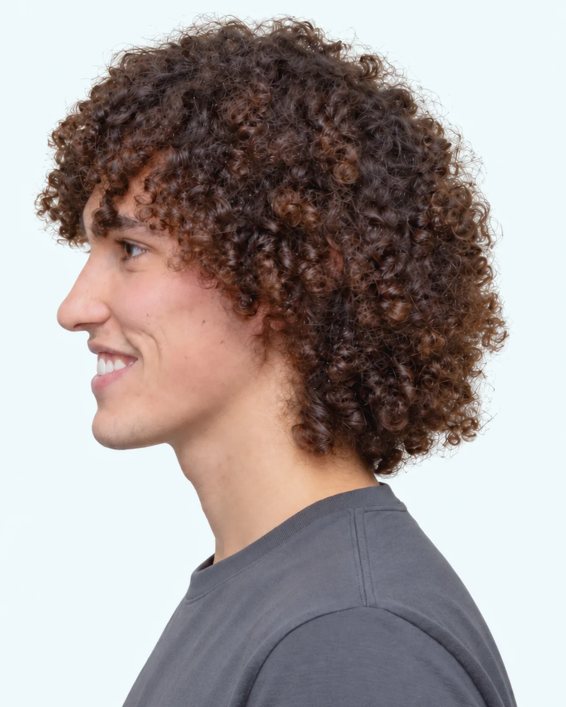
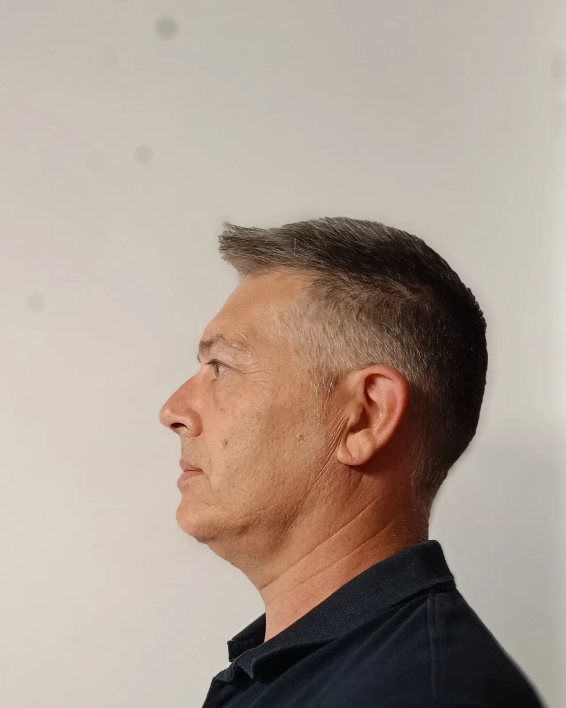

PRO-FILI Festival
Gli altri artisti

Giulia Dal Prà
Collage
Ritaglia, accosta e ricompone quello che gli altri hanno smesso di guardare.

FILO
Cantautorato
Cantautore, autore del disco «In cerca di un filo».

Massimo Marchioro
Pittura
Cerca nelle stanze più profonde, e le scale che portano in alto.

Mattia Signorini
Scrittura
Romanziere, tradotto in mezzo mondo.